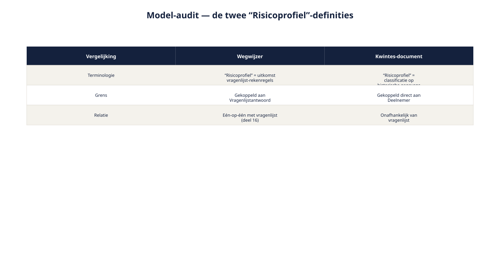

Deel 24 — Modeling Specialist: modelleren op stelselniveau
Slidedeck · Ductus-cursus Requirements Engineering · niveau 3 (specialist) · deel 24 van 30 · 16 slides
Slide 1 — Modeling Specialist
Modeling Specialist
Modelleren op stelselniveau
Cursus Requirements Engineering — Niveau 3, deel 24
Ductus
Slide 2 — Vandaag
Vandaag
- Twee modellen, één begrip, twee betekenissen
- Een model-audit uitvoeren
- Een assurance-laag voor toezicht
- Toegepast: de twee Risicoprofiel-definities
Slide 3 — Hetzelfde woord, twee betekenissen
Hetzelfde woord, twee betekenissen
| Wegwijzer | Kwintes-document | |
|---|---|---|
| "Risicoprofiel" | Uitkomst vragenlijst-rekenregels | Classificatie o.b.v. historische gegevens |
| Gekoppeld aan | Vragenlijstantwoord | Deelnemer, rechtstreeks |
Slide 4 — Geen fout van een van beide model.
Geen fout van een van beide model.
Elk intern consistent — het probleem ontstaat pas bij integratie.
Slide 5 — 1. Een model-audit
1. Een model-audit
Slide 6 — Drie vergelijkingen
Drie vergelijkingen
- Terminologie — dragen gelijke termen dezelfde betekenis?
- Grens — waar loopt de systeemgrens in elk model?
- Relatie — hangt een gedeelde entiteit overal hetzelfde vast?
Slide 7 — Figuur 24-1

Slide 8 — Opdracht 24.1
Opdracht 24.1 — Een model-audit uitvoeren
"Deelnemerstatus" vs "Voortgangsstatus".
Individueel · 25 minuten
Slide 9 — 2. Een assurance-laag voor toezicht
2. Een assurance-laag voor toezicht
Slide 10 — Het gedragsmodel toont wát er gebeurt.
Het gedragsmodel toont wát er gebeurt.
De assurance-laag toont welk bewijs op elk punt wordt vastgelegd.
Slide 11 — Figuur 24-2

Slide 12 — Opdracht 24.2
Opdracht 24.2 — Een assurance-laag ontwerpen
Minstens drie punten, elk met bewijs en doelgroep.
Tweetallen · 25 minuten
Slide 13 — 3. Toegepast: een vakpaper
3. Toegepast: een vakpaper
Slide 14 — Conclusie uit het voorbeeld
Conclusie uit het voorbeeld
- Beide "Risicoprofiel"-entiteiten blijven bestaan, apart benoemd
- Expliciete regel voor welke leidend is bij tegenstrijdigheid
- Geen schijnconsistentie door simpelweg samen te voegen
Slide 15 — Opdracht 24.3
Opdracht 24.3 — Een vakpaper-fragment schrijven
Individueel · 40 minuten
Slide 16 — Volgende keer: deel 25
Volgende keer: deel 25
RE@Agile Specialist — agile werken op stelselschaal